- DAX25-18【書籍】60分でわかる！ディープラーニング最前線
- Chapter1 今から追いつく！ ディープラーニングの基本
- 001 ディープラ一二ングとは何か
- 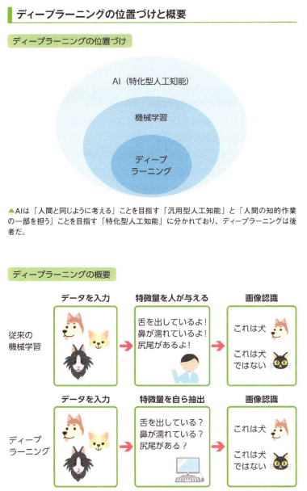
- 002 ディープラーニングでできること
- 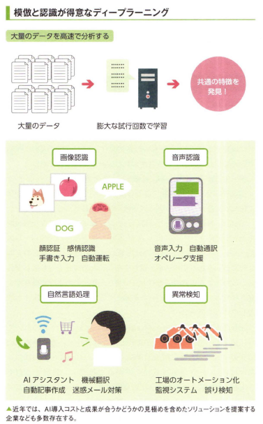
- 003 「AlphaGo」の、早すぎた勝利と敗北
- 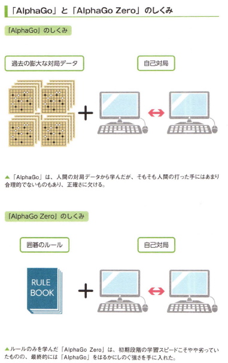
- 004 第3次Alブームは、ここが違う！
- 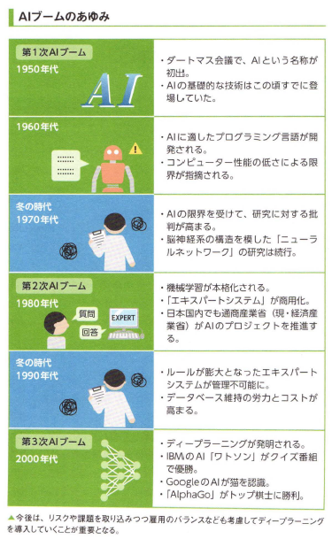
- 005 ネイティブ並みの発音を手にしたAlアシスタント「Siri」
- 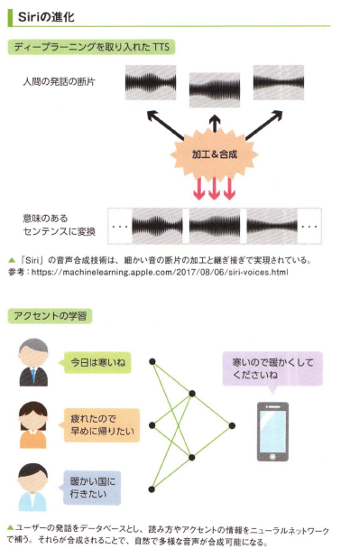
- 006 Google翻訳が自然な翻訳文を学ぶまで
- 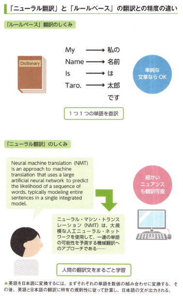
- 007 ちょっとした返信はAlにおまかせ！
- 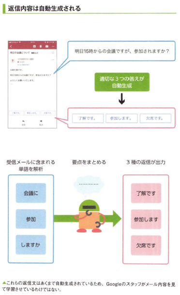
- 008 女子高生Al 「りんな」の可能性
- 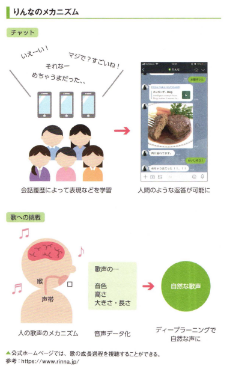
- 009 自動運転はここまできた
- 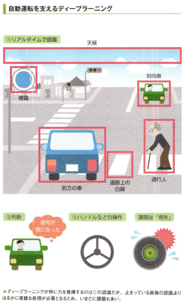
- Column 「強いAI」と「弱いAI」
- 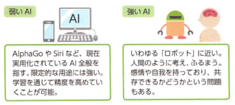
- Chapter2 そうだったのか！ ディープラーニンクのしくみ
- 010 機械はどうやって学習しているのか
- 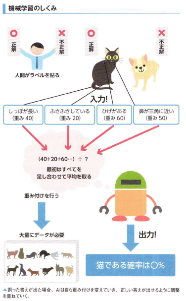
- 011 ディープラ一二ングと機械学習の違い
- 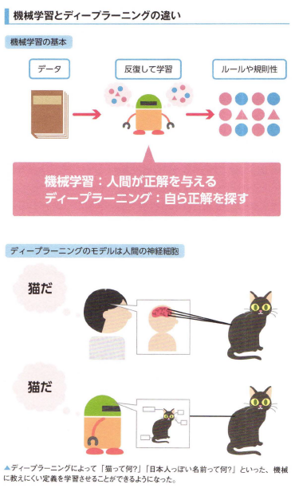
- 012 「教師あり学習J と「教師なし学習」
- 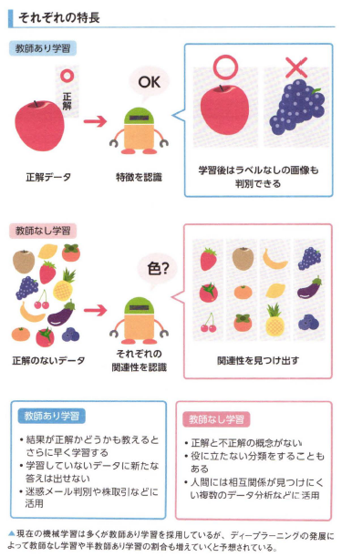
- 013 脳の働きを模倣する「ニューラルネットワーク」
- 014 そもそも何が「ディープ」なの？
- 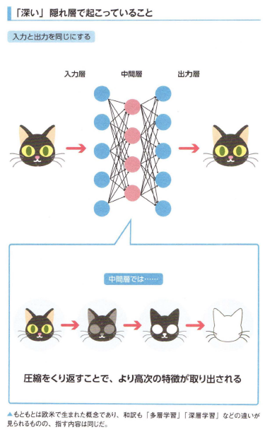
- 015 ディープラ一二ングで使われている数学知識
- 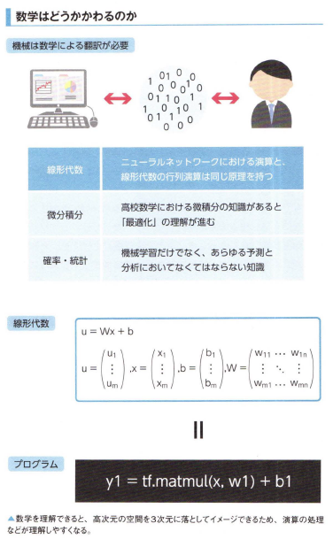
- 016 学習不足と過学習
- 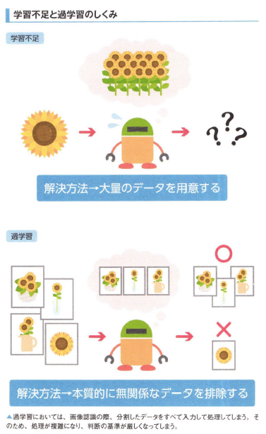
- 017 畳み込みニューラルネットワーク（CNN）とは
- 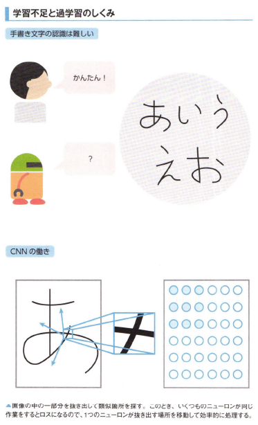
- 018 大量のデータをただ入力するだけでは逆効果？
- 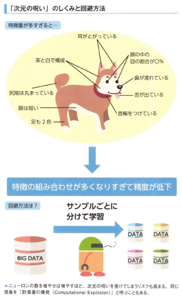
- 019 画像認識精度の大飛躍
- 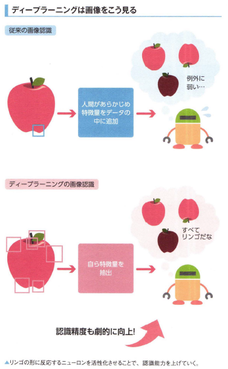
- 020 「画像を見るJ だけでなく「画像を作り出す」ディープラーニング
- 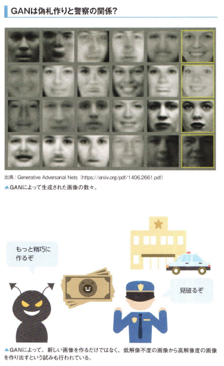
- 021 リアルな「声」 を求めて
- 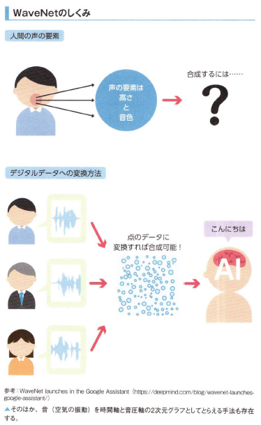
- 022 ビッグデータは欠かせない
- 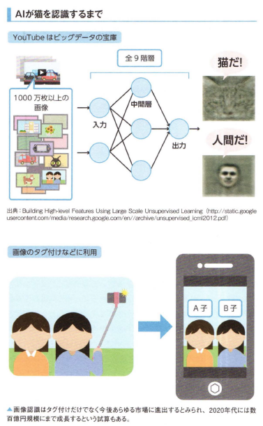
- 023 ビッグデータを100%生かす「マイニング」
- 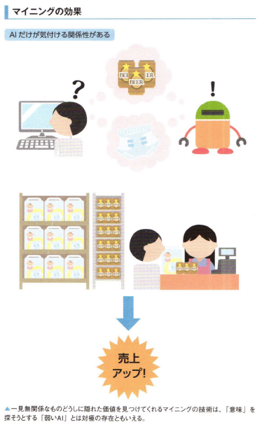
- 024 ディープラーニングの得意分野と不得意分野
- 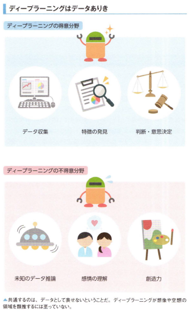
- 025 クラウド利用でもっと身近に
- 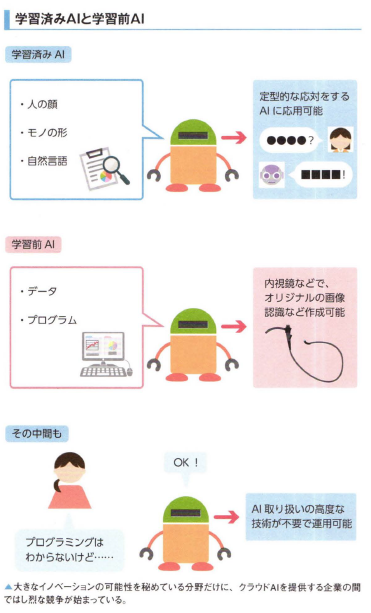
- 026 ディープラーニングとハードウェア
- 027 自前で、ディープラーニングを行うには？
- 028 GPUの性能が、ディープラーニングを左右する
- 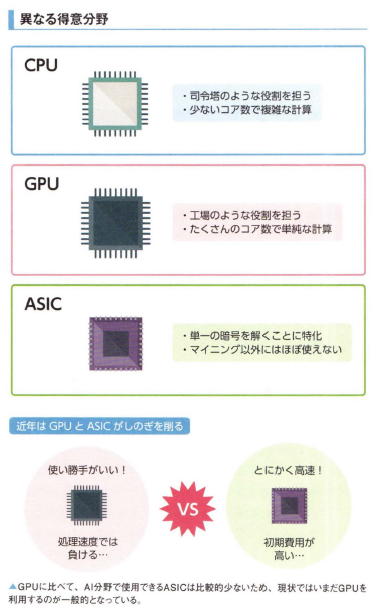
- 029 Googleが開発したGPU「TPU」とは
- Column ディープラーニングは「黒魔術」？
- 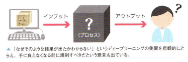
- Chapter3 これで、わかった！ ディープラーニンク開発の第一歩
- 030 ディープラーニング導入の手順
- 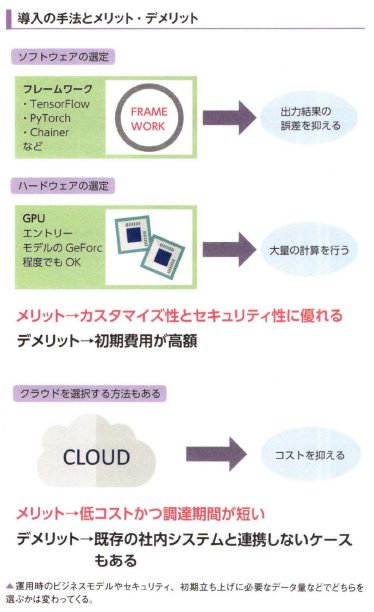
- 031 導入後の手法
- 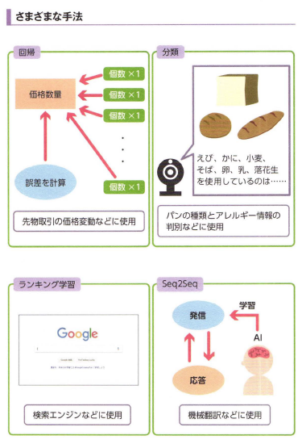
- 032 ビッグデータが集められなかったら……
- 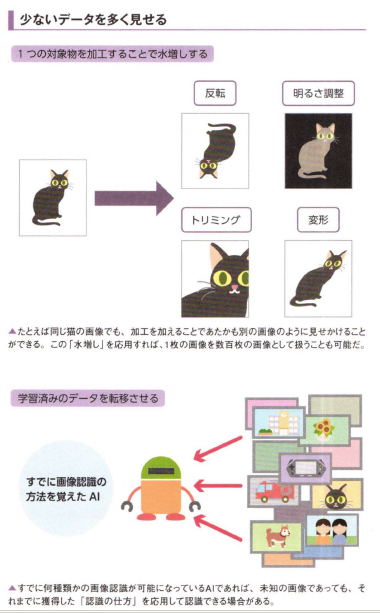
- 033 開発に必要な人材とは
- エンジニア、ジェネラリスト、データサイエンティスト
- 現在、とくにスタートアップ系の企業において、デイープラーニングの知見を持つ人材の育成が急がれています。
- とはいえ、単に理論を理解しているというだけでは、ビジネスに応用はできません。そこで活躍が期待されるのが「ジェネラリスト」です。
- ジェネラリストとは、経営層、開発に携わるエンジニアなどの相互理解を深め、うまくつなげる役割を果たすとともに、基礎的な理解者としてデータ活用を支援する人材です。
- 「一般社団法人H本デイープラーニング協会(JDLA)」では、そのような人材を育成すべく、毎年、検定を実施しています。ジェネラリストとしての知見を問う「G検定」と、エンジニアが対象の「E資格」です。
- 「G検定」の試験では人工知能の定義や最新動向、デイープラーニングの概要や手法、どう産業に応用するのかなどが出題されます。一方の「E資格」においてはデイープラーニングの理論や実装能力が問われます。
- そのほか、近年大きな注nを集める職業として「データサイエンティスト」があります。データサイエンティストとは、ピッグデータからピジネスに活用できそうな知見を見出し、事業や経営の課題を解決する人材です。
- 「データサイエンティスト協会」では、そんなデータサイエンティストを育成すべく、 カリキュラムの作成や勉強会を実施しています。それぞれの人材に適切なトレーニングが提供されることで、デイープラーニングによる産業競争）］の向上が目指されています。
- 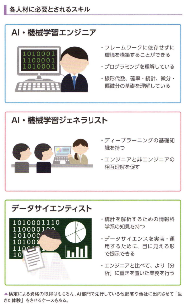
- 034 効率的な運用を支える組織体制
- ［データサイエンスの重要性
- デイープラーニングを活用したビジネスモデルを作成するには、適切な組織体制のもとで、いくつかの段階を踏む必要があります。
- まずはビッグデータの用慈です。ただ集めるだけでも大変ですが、時間がかかるのは、
- データを除いたりする準備段階なのです。
- 水増しや転移学習(P.74参照）で対応するにせよ、やはり時間はかかります。
- このような背景もあり、エンジニア、ジェネラリスト、データサイエンティストはもちろん、「データエンジニア」の必要性も増しています。
- データエンジニアとは利用しやすいようにデータを揃える専門家のことです。
- さまざまなデータを一元的に保管し、横断的に分析できる環境を整備することで、従来不可能だった洞察を初めて可能にしてくれます。
- また企業全体の組織面では、データ活川に協力してくれる環境づくりも重要です。
- とくに現場が強い組織では、新しくできたデータサイエンスのチームが何者かわからず、かんたんに受け入れられない可能性も考えられます。
- 経験に頼って判断を下していた組織を変えるために、AIによる小さな成功事例を積み重ねていくことも重要です。
- 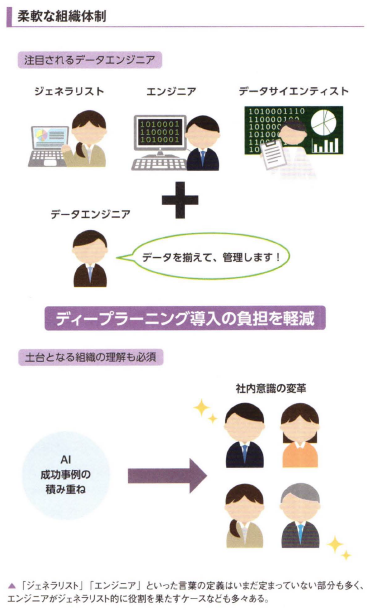
- 035 よく利用されるクラウドサービス
- 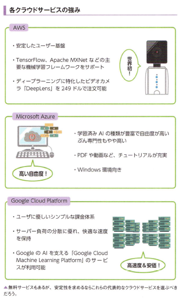
- 036 クラウドのメリット
- 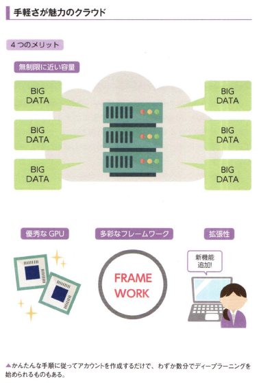
- 037 クラウドの価値を左右する「API」とは？
- 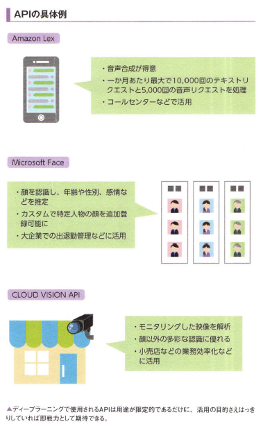
- 038 フレームワークによってさらに開発が進む
- 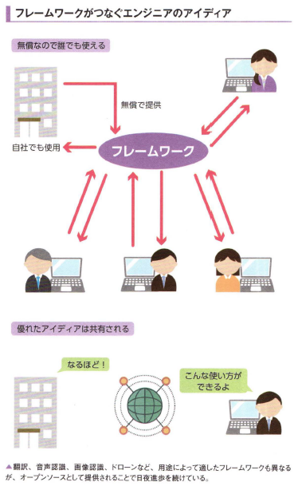
- 039 フレームワークのメリットとデメリット
- 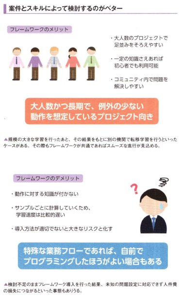
- 040 プログラミング言語を知らなくても開発可能？
- 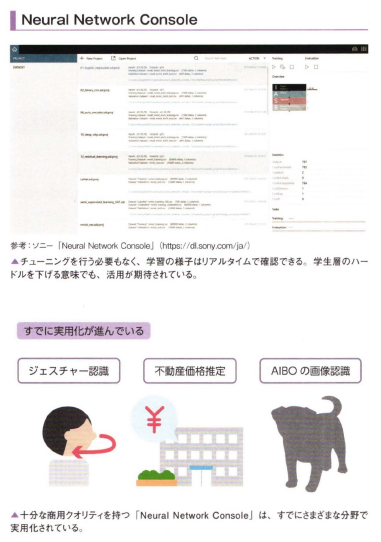
- 041 どんなプログラミング言語が使われるのか
- 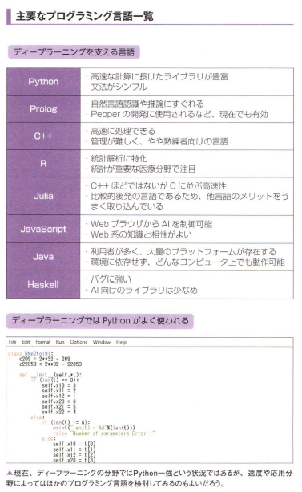
- 042 なぜ、Pythonが使われるのか？
- 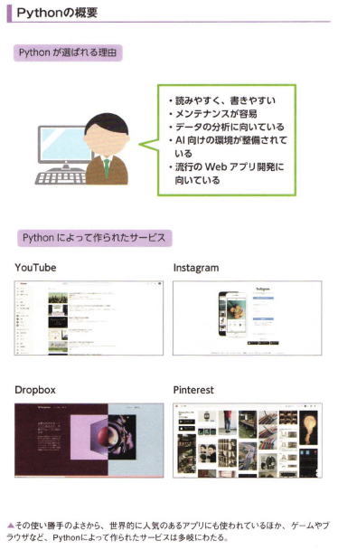
- 043 オープンなデータセットを活用する
- 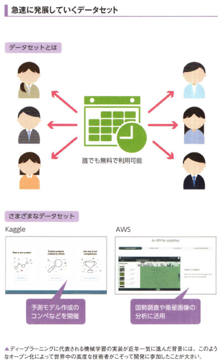
- 044 アウトソーシングでプロの手を借りる
- 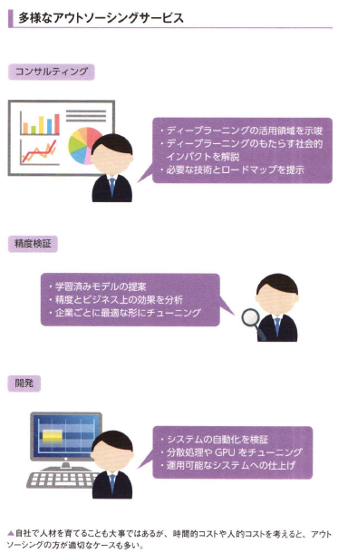
- 045 ディープラーニング専用マシン？ 「ワークステーション」とは
- 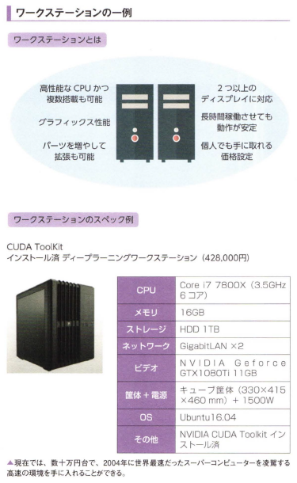
- 046 大規模システムの構成
- 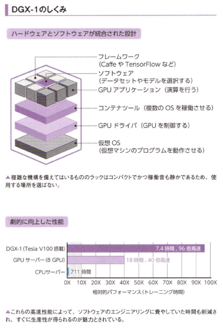
- 047 企業で利用されるハードウェア
- 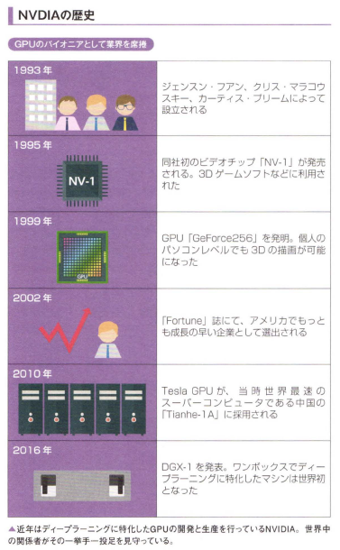
- Column 低電力でディープラ一二ング
- 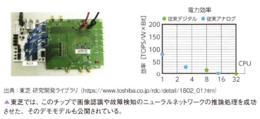
- Chapter4 次世代ビジネスを左右する！ ディープラーニングの応用例
- 048 Alが人生指南書を執筆！？
- 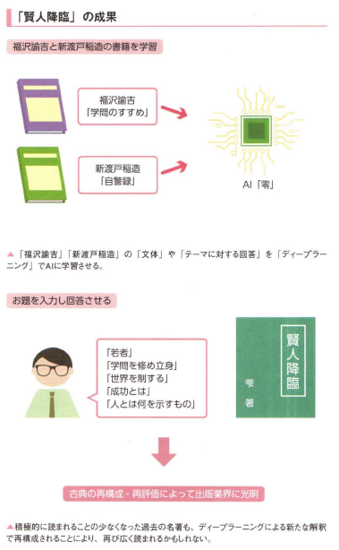
- 049 目標は無人店舗！ クリーニング店の挑戦
- 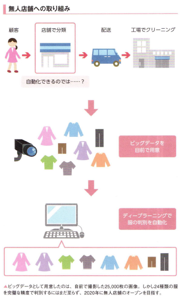
- 050 「似てる」デザインが一目でわかる
- 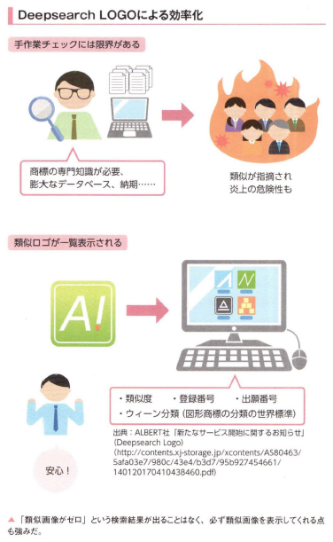
- 051 「ロボットシャトル」で過疎地の移動手段を解決ヘ
- 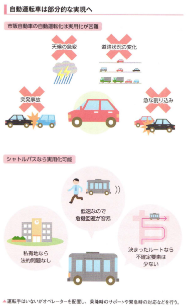
- 052 コンビニに大変革！ もう現金はいらない？
- 053 ミラーのない車で事故を減らす
- 054 画像診断支援技術で難病を撃退！
- 055 道路下の空洞を事前検知してリスクを減らす
- 056 RPAとディープラ一二ングで働き方が変わる
- 057 猛スピードで加速していくAl市場
- 058 最先端の研究成果を見逃すな！
- Column ディープラーニングと戦争
- Chapter5 これからどうなる？ ディープラーニングの未来
- 059 スポーツから「誤審」と「伝説」がなくなる日
- 060 制御不能になったらどうする？
- 061 ディープラーニングで激変する授業
- 062 大きく遅れる日本のAl・ディープラーニング開発
- 063 投資もディープラーニングにお任せ
- 064 Alが、あなたの仕事を奪う？
- 065 人間の「調整」はどこまで必要なのか
- 066 欠かせないセキュリティ対策
- 067 ディープラ一二ングの悪用は「退行」をもたらす
- 068 事故が起きたら、誰の責任？
- 069 きたるべきシンギュラリティと、2045年問題
- ディープラーニング関連企業リスト